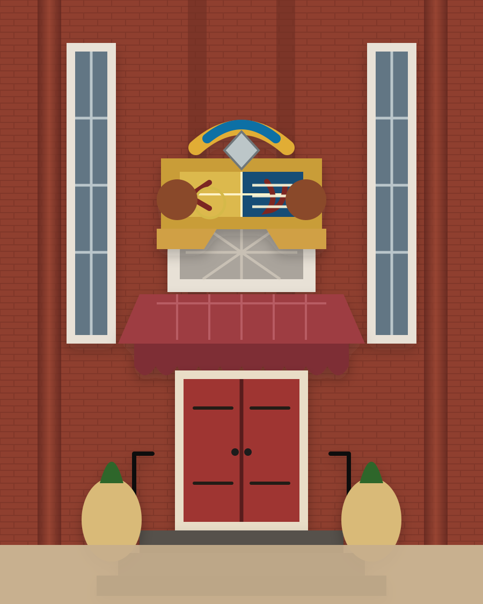

Historic fabric
Respect the exterior presence, the sanctuary volume, and the architectural features that make the building worth saving.
Baltimore • Pigtown • Preservation
Pigtown Sanctuary is a preservation/adaptive-use project centered on keeping the sanctuary as the main space while supporting arts, music, performance, local history, and neighborhood gathering.
The entrance
The red doors, brick façade, stained-glass detail, and crest create a clear identity for the project: historic character first, with adaptive use built around what makes the place memorable.

The vision
The goal is to honor the building’s history while creating a flexible future for arts, music, performance, creative work, and community use. The sanctuary remains the heart of the project: a generous room with presence, memory, and public value.
This is not a teardown idea. It is a reuse idea: stabilize what matters, preserve what gives the place its identity, and build a practical path for renewed neighborhood life.
The building
Respect the exterior presence, the sanctuary volume, and the architectural features that make the building worth saving.
Support performance, music, visual art, workshops, and flexible programming without reducing the sanctuary to generic event space.
Build a project that contributes to Pigtown through preservation, activity, partnerships, and community-facing use.
Community use
Pigtown Sanctuary can become a home for performances, small cultural events, arts partnerships, preservation work, local storytelling, and creative reuse. Youth and education programming may become part of the broader mission, but the lead purpose is preservation and adaptive use with the sanctuary at the center.
How to help
This project needs allies: preservation advocates, neighbors, artists, builders, funders, historians, community organizations, and people who understand why old buildings matter.
To contact the project, email pigtownsanctuary@gmail.com.